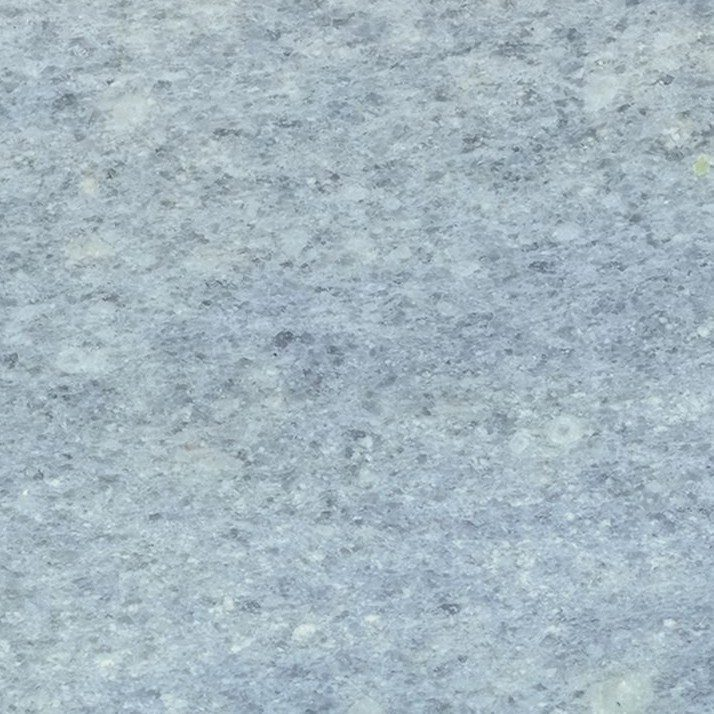
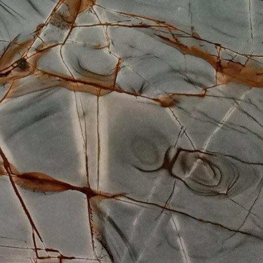
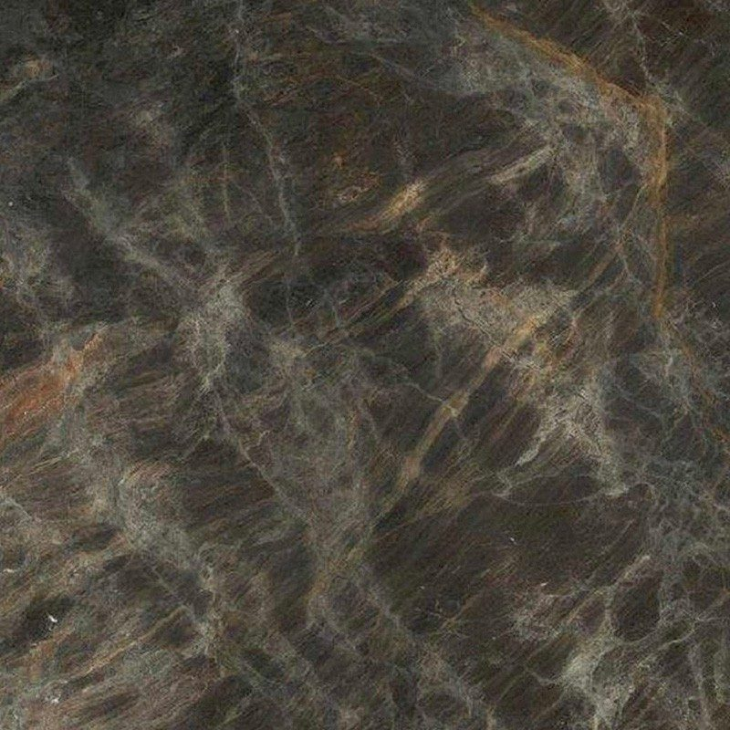
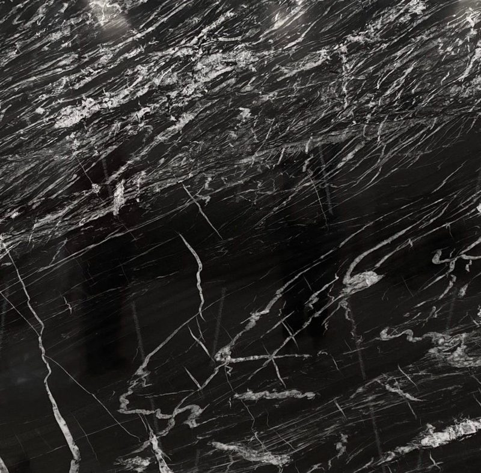
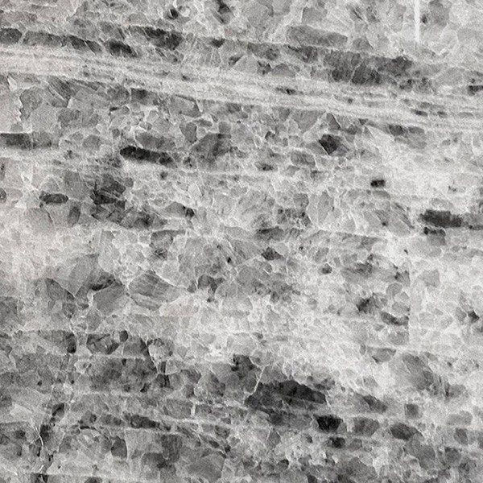
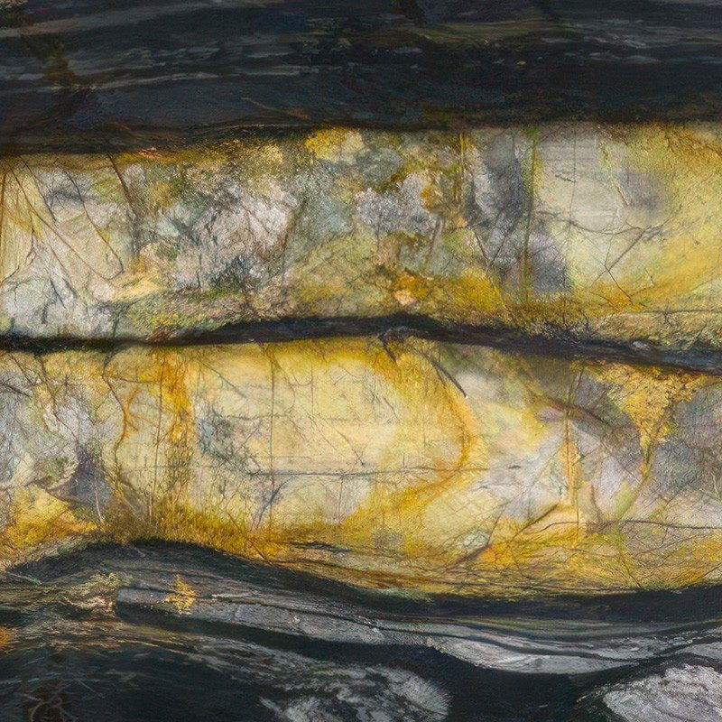
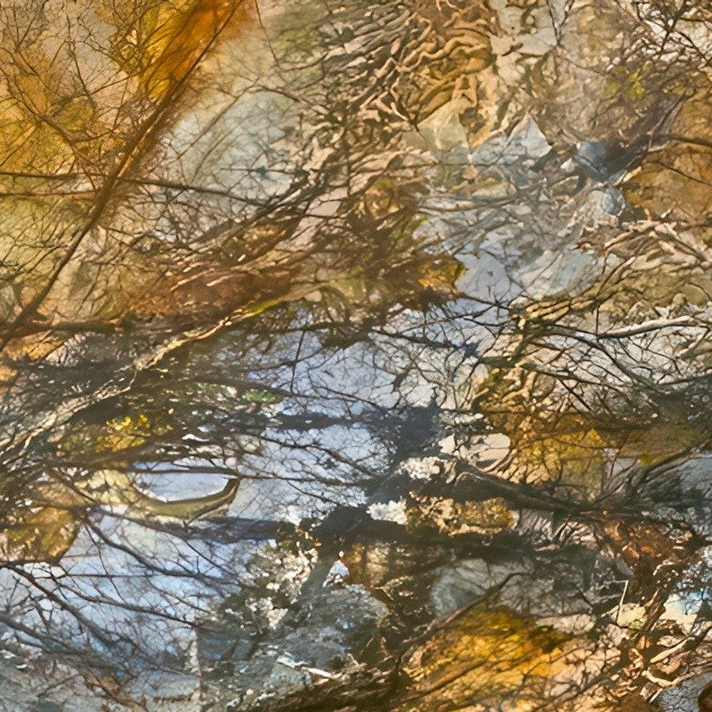
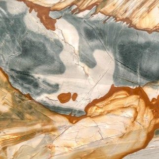
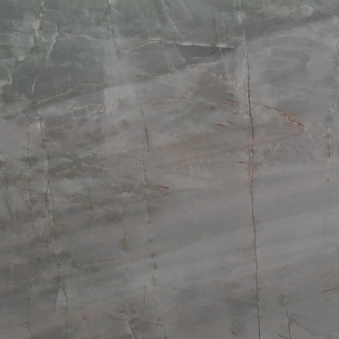

Cosentino — traitement Texta
Texta quartzite: bold colours and a mineral feel
Texta quartzite worktops are for people who want a stone unlike any other. Deep blues, streaked blacks, honey yellows or mint green: these boldly coloured natural quartzites are shown off by a surface with a matt, grainy feel. We cut them to measure in Mafra.
Worktops in Texta Quartzite
Texta brings together natural quartzites chosen for their bold colours and a textured surface with a matt, grainy feel. This finish diffuses light and shows fewer fingerprints and water marks than a polished one. Harder than granite, the stone suits worktops, islands, splashbacks and vanity tops.
Texta Quartzite
- Polished
- Honed
- Leather
- Thicknesses 20 mm / 30 mm
- Matt feel
- Textured
- Fewer prints
- Low-marking
- Hardness
- > granite
- Thicknesses
- 20 / 30 mm
Finishes and formats
- Polished
- Honed
- Leather
- 20 mm · 30 mm
Texta Quartzite colours
9 colours available, which you can also see in person at our Mafra factory by appointment.

Blue ImperadorPolished · Honed · LeatherDeep slate blue with light grey veins.
Blue RomaPolished · Honed · LeatherIntense blue with cream and golden veins.
BrowntobáPolished · Honed · LeatherChocolate brown with caramel highlights.
Electric BlackPolished · Honed · LeatherDeep black shot through with white lightning streaks.
GreylisPolished · Honed · LeatherGrey striped with darker lines.
Gris BeePolished · Honed · LeatherGreyish black shot through with golden veins.
MyellowPolished · Honed · LeatherWarm golden yellow with honey nuances.
Polaris GoldPolished · Honed · LeatherWarm white base with golden veins.
Vert MentholPolished · Honed · LeatherFresh mint green with white veins.
Inspiration

Texta QuartziteKitchen setting 
Texta QuartziteBathroom setting 
Texta QuartziteWorktop setting
Why choose Texta quartzite for your worktop
Cosentino's Texta collection was designed around colour. Where many worktops play it neutral, these quartzites embrace strong shades that become the focal point of the kitchen or bathroom.
Their textured surface also has a practical role: it diffuses light rather than reflecting it and shows finger and water marks less than a polish. That is particularly welcome on dark colours or near the sink.
Beneath this finish is a stone harder than granite, suitable for worktops, islands, splashbacks and vanity tops. Depending on the effect you want, the colours come polished, honed or leathered, in 20 or 30 mm.
Choosing your Texta quartzite colour
The nine Texta quartzites form a bold palette.
- Blues: Blue Roma, an intense blue with cream and golden veins, and Blue Imperador, a more restrained slate blue. Spectacular on an island.
- Blacks: Electric Black, streaked with white lightning, and Gris Bee, a greyish black scattered with golden veins.
- Warm tones: Myellow, a golden yellow with honey hints, Polaris Gold, a warm white with golden veins, and Browntobá, a chocolate brown with caramel glints.
- Fresh shades: Vert Menthol, a mint green with white veins, and Greylis, a streaked grey.
With such strong colours, we recommend simple cabinet fronts in pale wood, white or matt black to let the stone speak.
Your questions
Is a textured surface hygienic in a kitchen?
Yes, provided it is cleaned properly. The Texta texture is fine and cleans well with a soft sponge, hot water and neutral soap; a soft brush can help now and then in the micro-texture. For kneading or working directly on the surface, a polished area or a board is more comfortable. Avoid strippers and abrasive products.
Is Texta quartzite suitable for a vanity top?
Absolutely, and it is one of the intended uses for this collection. In a bathroom, its textured surface shows water and limescale marks less than a polish, which is valuable around a tap. A colour such as Vert Menthol or Blue Roma creates a truly personal room. We make the basin cut-outs to measure in 20 or 30 mm.
Let's talk about your project
An expert reviews your request and replies within 48 working hours with a tailored proposal.